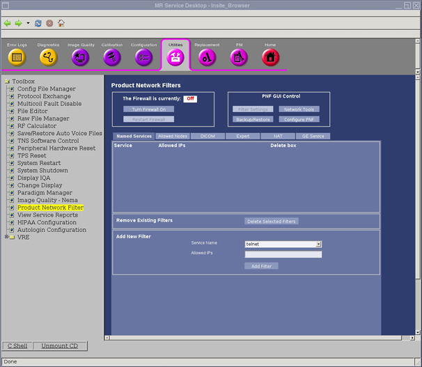
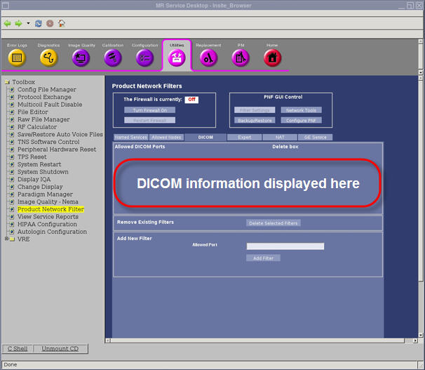
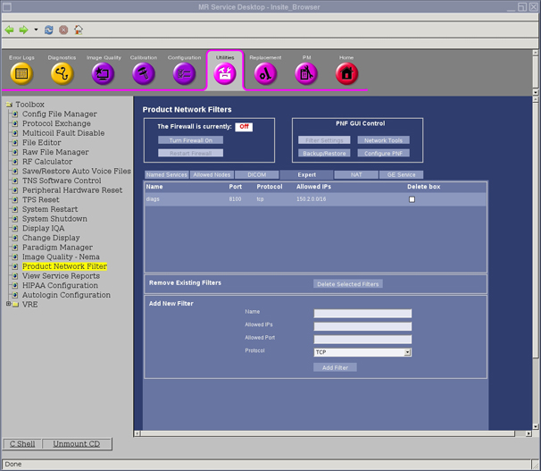
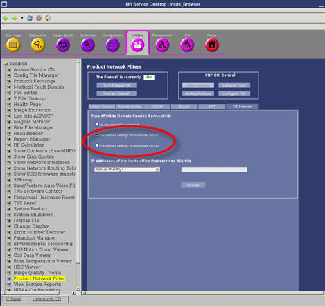
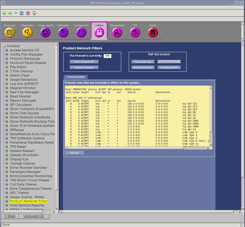

- 00000018WIA30E19450GYZ
- id_20226382.9
- Feb 16, 2023 10:11:41 PM
Product Network Filters (PNF) for release 24.0 to 25.1_R02, 26.0_R01
Use these steps to set filters that restrict which system services are allowed to be controlled by other devices trying to access the Operator console.
Overview
Product Network Filters (PNF) is a software firewall tool that lets a site Network Administrator control traffic from the site's internal network to the Diagnostic Imaging System. This tool was created in response to the customer's need for security.
This tool is accessible from the Common Service Desktop (CSD). Select the Utilities tab, then Product Network Filters.

| Notice | |
|---|---|
Firewall state
| Notice | |
|---|---|
The Firewall can be turned ON and OFF by clicking the buttons in The Firewall is currently: section (shown in Main PNF screen).
PNF GUI control
There are four options for the PNF GUI control:
- Filter Settings
- Used for setting up the different filters.
- Backup / Restore
- Used for archives.
- Network Tools
- Used to show firewall rules.
- Configure PNF
- Used to select red interfaces.
Filter settings tabs
Named services tab
The Named Services tab is the screen where the site's network administrator selects a standard networking service to open to this system from the site's network. See Main PNF screen.
When the firewall is on, click Restart Firewall to make the change effective.
Adding a network service
- To add a network service, click the drop-down menu labeled Service Name shown in Main PNF screen..
Standard Networking Services offered are:
- telnet
- ssh
- ftp
- rexec
- rlogin
- rsh
- http
- https
- tftp
- ldap
- ssl/tls
- ntp
- portmap
- ping
- vnc
- Select a network service from the Service Name menu.
- An IP address can be entered in the Allowed IPs field.
IP addresses let the user create rules where network communication is only accepted from a predetermined host or set of hosts. Below is a list of acceptable ways to populate the IP fields.
- w.x.y.z = single IP address (for example, 1.2.34.5)
- w.x.y.z/a.b.c.d = subnet with netmask (for example, 1.2.0.0/255.255.0.0)
- w.x.y.z/a = subnet with byte netmask, this is the same as the previous subnet but specifying the netmask as a number of bits (for example, 1.2.0.0/16)
- w.x.y.a - w.x.y.b = IP range, all hosts between two end points (for example, 1.2.34.5 - 1.2.34.10)
- * = all IP addresses
- Click Add. This service is now added to the list. If the Allowed IPs field was left blank an * will appear.
Removing a network service
- Check the box next to the Node IP on the list.
- Click the Delete button.
Allowed nodes tab
The Allowed Nodes tab opens all network services to a specific IP address (shown below).
Adding an allowed node
- Enter the IP address in the Node IP field.
IP addresses allow the user to create rules where network communication is only accepted from a predetermined host or set of hosts. Below is a list of acceptable ways to populate the IP fields.
- w.x.y.z = single IP address (for example, 1.2.34.5)
- w.x.y.z/a.b.c.d = subnet with netmask (for example, 1.2.0.0/255.255.0.0)
- w.x.y.z/a = subnet with byte netmask, this is the same as the previous subnet but specifying the netmask as a number of bits (for example, 1.2.0.0/16)
- w.x.y.a - w.x.y.b = IP range, all hosts between two end points (for example, 1.2.34.5 - 1.2.34.10)
- * = all IP addresses
- After the IP address has been entered, click Add Filter so the IP Address will be added to the list.
Removing an allowed node
- Select the filters to be deleted.
- In the Remove Existing Filters box, select Delete Selected Filters.
DICOM tab
This screen may be used to make sure that the correct DICOM port was populated during installation. This field should be autopopulated during the initial setup of the DICOM ports. Also, additional DICOM ports can be added (shown below).

Adding a DICOM port
- Enter the DICOM Port in the Allowed Port field.
- Click the Add Filter button so the new DICOM Port is in the list.
Removing a DICOM port
- Select the filters to be deleted.
- In the Remove Existing Filters box, select Delete Selected Filters.
Expert tab
The Expert tab allows a more flexible method for the network administrator to create rules. Any input to this tab will require networking expertise. Please work with the site's network administrator when working in this tab.
This tab is also used to view all of the application rules that have been created (shown below).

Creating a rule
- To create a rule for the firewall, enter the application name in the Name field.
- Enter the Allowed IP in the Allowed IP field.
- Enter the Allowed Port info in the Allowed Port field.
- Click the Protocol menu for the rule to be applied.
- If needed, enter the IP address that this rule will be applied.
IP addresses allow the user to create rules where network communication is only accepted from a predetermined host or set of hosts. Below is a list of acceptable ways to populate the IP fields.
- w.x.y.z = single IP address (for example, 1.2.34.5)
- w.x.y.z/a.b.c.d = subnet with netmask (for example, 1.2.0.0/255.255.0.0)
- w.x.y.z/a = subnet with byte netmask, this is the same as the previous subnet but specifying the netmask as a number of bits (for example, 1.2.0.0/16)
- w.x.y.a - w.x.y.b = IP range, all hosts between two end points (for example, 1.2.34.5 - 1.2.34.10)
- * = IP addresses
- After all fields have been populated, click the Add Filter button. The rules created will now be added to the list.
Removing a rule
- Select the filters to be deleted.
- In the Remove Existing Filters box, select Delete Selected Filters.
GE HealthCare service key enabled view
The GE Service tab shows the IP address for the connection of remote service. If the site is using non-standard VPN administration, get the correct IP address and contact the Online Center connectivity team to establish the proper link. Click predefined settings for traditional access or predefined settings for encrypted access.

Troubleshooting
Troubleshooting the firewall can be done by turning the firewall ON and OFF. See Firewall state button.

The firewall can be turned ON and OFF by clicking the turn Firewall Off or turn Firewall On buttons. To view all applied filters, select Network Tools, which is located in the PNF GUI Control section.

| Notice | |
|---|---|
Currently the filters are applied to allow Online Center connections (IP starts with 150.x.y.z), DICOM port 4006, telnet from port 23 for all IP, NS/icmp ping from all IP, telnet/tcp for diags from port 8100, rfb for tva/vnc from port 5800, 5900, and rexec, ftp, login, http from various ports for IIP traffic are allowed.
The filters are given below for your reference.
- IIP|exec|512|tcp|150.2.0.0/16
- IIP|login|513|tcp|150.2.0.0/16
- IIP|shell|514|tcp|150.2.0.0/16
- IIP|http|80|tcp|150.2.0.0/16
- IIP|ftp|21|tcp|150.2.0.0/16
- IIP|telnet|23|tcp|150.2.0.0/16
- IIP|tva|5800|tcp|150.2.0.0/16
- IIP|tva|5900|tcp|150.2.0.0/16
- DICOM|dicom|4006|tcp|*
- NS|telnet|23|tcp|*
- NS|ping (icmp)||icmp|*
- EX|diags|8100|tcp|150.2.0.0/16
Finalization
- After all settings have been entered, create a backup by selecting Backup/Restore from the PNF GUI Control section.
- Select Backup Current Filters to create a backup file.